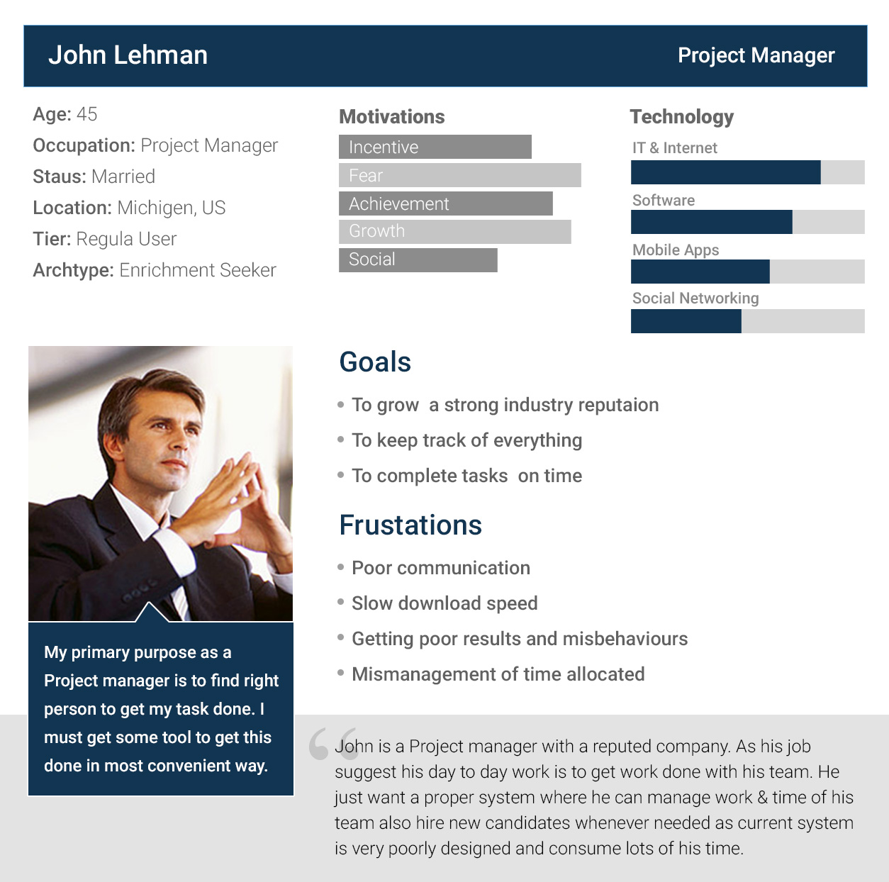
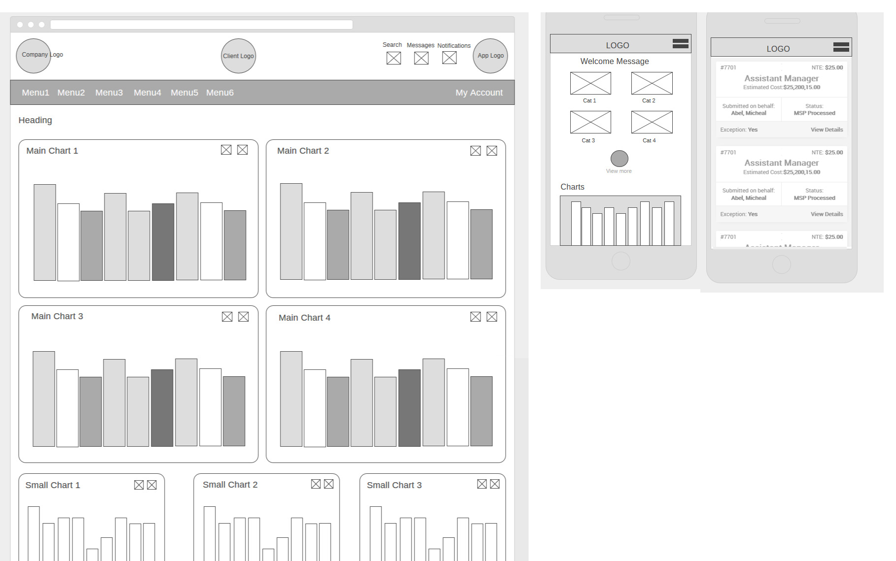
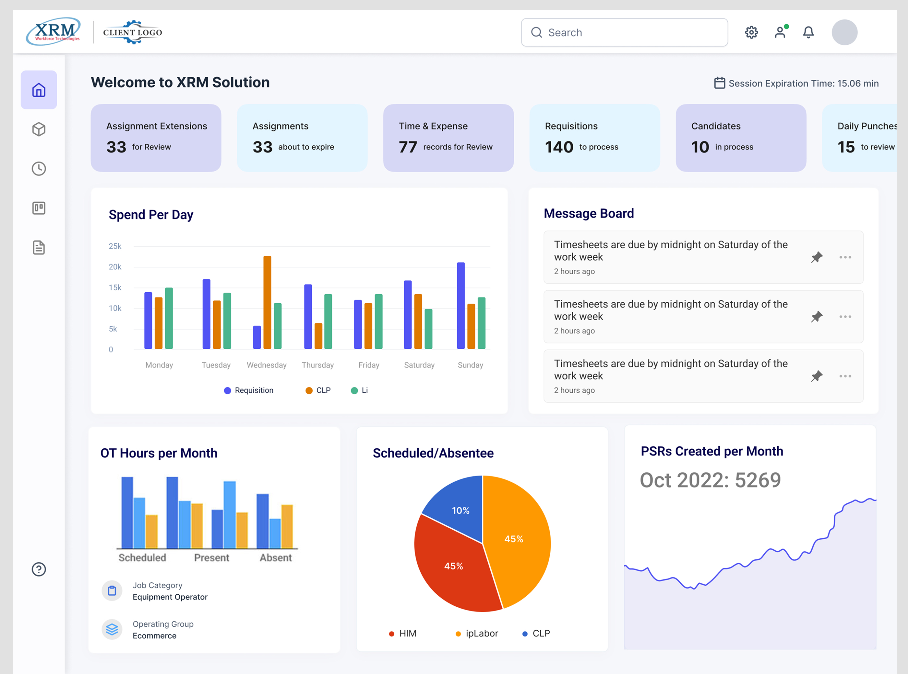
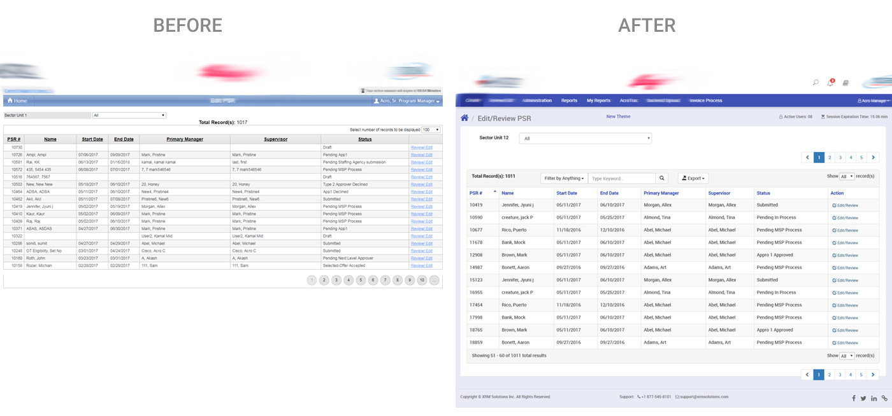
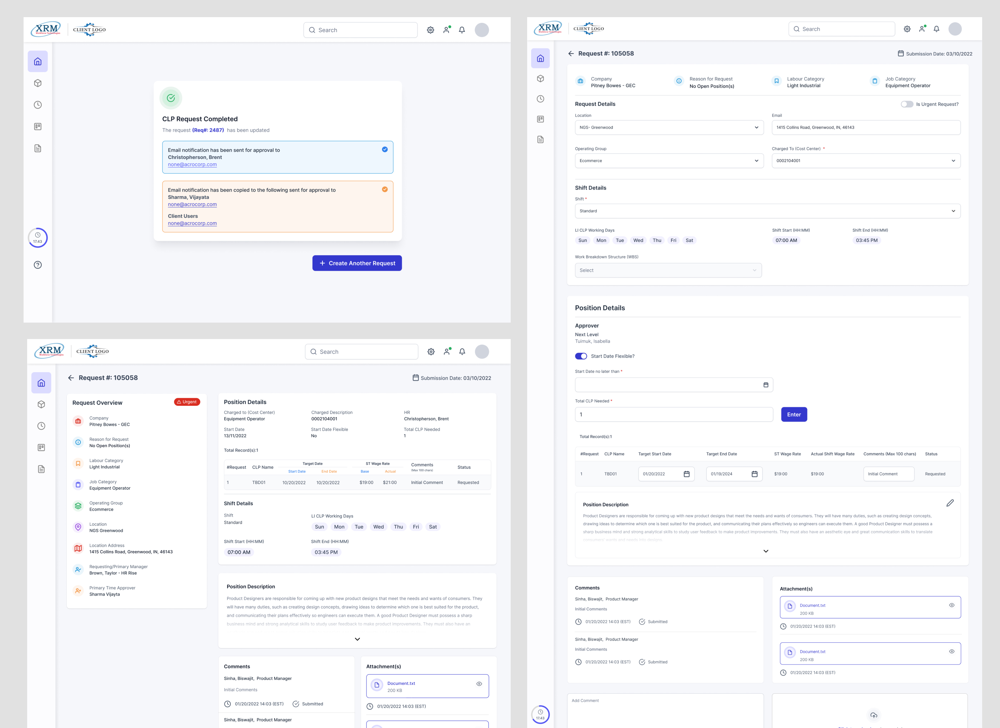
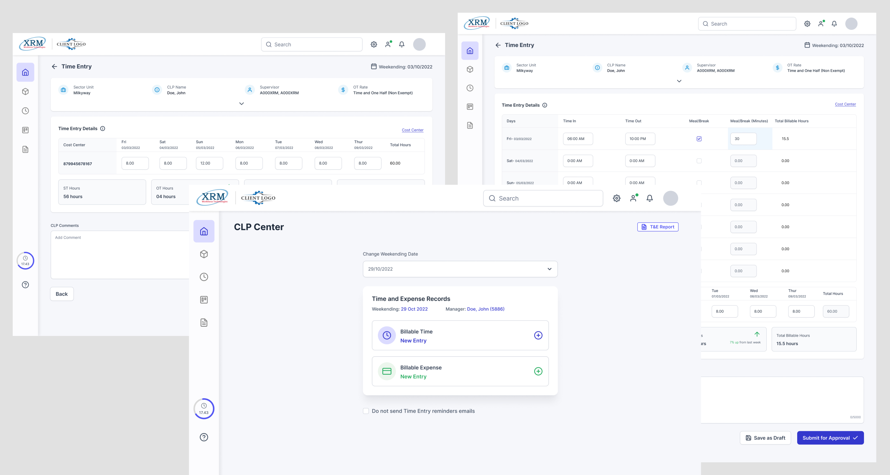
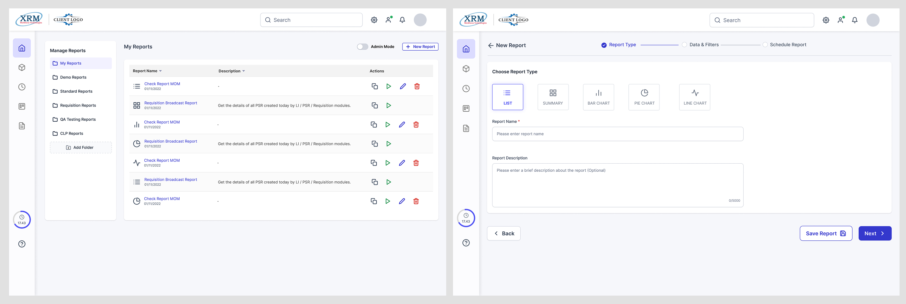
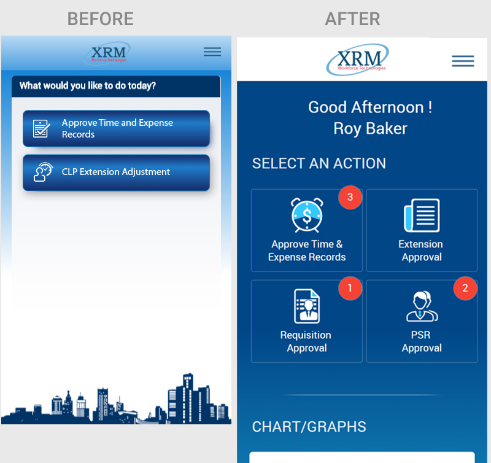

Contact
Let's work together
For new opportunities and collaborations. Feel free to reach out or just want to connect.
Total Contingent Workforce Staffing Solutions
Resource management application enables resource recruiters such as project managers or charge managers, to create resource plans and request resources. Resource management is the efficient and effective development of an organization's resources when they are needed. Such resources may include financial resources, inventory, human skills, production resources, or information technology (IT).
My Role: I was part of the project as a Sr. UX designer and was responsible for UX/UI Design.
Collaboration: Business Stakeholder, Project Manager, MSP's, and Dev team.
Tools: Photoshop, Invision, HTML/CSS, Bootstrap, MS Teams

Now that we had clarity on what we were designing and who we were designing for, it was time to focus on the how. The main challenge was to create an experience that felt simple, intuitive, and engaging—one that helped users accomplish their goals with minimal friction. As the UX designer, here’s the approach I recommended:

Responsible for timely creation and updates to employee job records and position data
Managed Service Provider manages the temporary worker recruitment for an organisation.
Review and approve requests, decisions, or processes within a company.
Today, around 11% of the U.S. workforce—approximately 15 million people—are contract employees, and that number continues to grow steadily. These professionals are a valuable asset to the organizations that employ them, bringing flexibility, productivity, specialized skills, reduced downtime, and lower risk.
However, the challenge we’re addressing isn’t just about recognizing their value—it's about managing them effectively. Through our initial research, we discovered several critical gaps:
Our goal is to provide a robust, web-enabled solution tailored to companies hiring contract professionals. This platform acts as a centralized system to manage and procure staffing services—be it temporary, contract-based, or even permanent placements. Key features include:
And of course, the ultimate business goal: creating a revenue-generating product that delivers measurable value.
Before diving into design and development, it was essential to understand where our product stands in the market—and how we can differentiate ourselves. Our analysis focused on identifying strengths and gaps in existing solutions. We categorized our findings based on four core usability and functionality areas:
These platforms serve as benchmarks, helping us identify industry standards and opportunities for differentiation.
| Application | Pain-Points | Opportunities |
|---|---|---|
|
SAP Fieldglass
|
|
|
|
Beeline
|
|
|
|
Workday VNDLY
|
|
|
|
SimpleVMS
|
|
|
Based on the information gathered from MSP's, Admins, Approvers and stakeholders, we identified many pain-points in current system:
Following conversations with several users, we identified a common challenge—many found it difficult to adapt to our current application due to its complexity. To help our team build a clearer understanding of the user experience, we developed a primary persona that reflects the users’ core motivations, goals, and pain points. This served as a foundation for aligning design decisions with real user needs.

During the ideation phase, we focused on identifying the most intuitive and efficient way to present financial data and insights to users. By synthesizing user feedback and aligning with business goals, we conceptualized a modular card-based dashboard system. The goal was to reduce cognitive load, improve access to key information, and enable quick decision-making through visual clarity and interactivity.
Based on the consolidated insights from user feedback, ideation sessions, and feature prioritization, we are now ready to begin wireframing the new dashboard and other pages experience. The wireframes will translate our key concepts—such as modular card layouts, customizable dashboards, quick-access navigation, dynamic data visualization, and a clean, modern UI—into tangible design structures.
The primary goals for wireframing are to:

Visual design were heavily influenced by user feedback, with iterative design and constructive feedbacks though click-through prototype helped us in ensuring the product meets the needs and expectations of the target users. The focus was on creating an intuitive, efficient, and visually appealing interface that supports seamless workflows.
To modernize and improve usability, the existing tab-based dashboard was redesigned into a card-based layout, offering users greater flexibility and interactivity. This new design allows more charts to be visible at once, with additional features including the ability to enlarge charts, switch chart types, and easily print, share, or email data for enhanced functionality. A global search has also been introduced, enabling users to locate information across any page or section seamlessly.

The previous grid layout was basic and limited to pagination. The updated grid is far more dynamic and user-friendly, now offering options to:

The inner screens were restructured to enhance content comprehension and navigation. A card-based layout was adopted, accompanied by a left-hand navigation panel that provides single-click access to various sections. Additionally, a task completion counter was introduced to keep users informed of their progress and pending items at a glance.



Following the web redesign, the mobile experience was also refreshed. The goal was to provide a clean, intuitive interface that mirrors the web version while catering to mobile-specific needs. All charts and category options are now accessible from a single page, improving navigation and user efficiency. Icons and notifications were incorporated for clarity and quick actions.

The comprehensive redesign of both web and mobile dashboards marks a significant step toward improving usability, accessibility, and overall user satisfaction. By shifting from a tab-based to a card-based layout, introducing global search, enhancing data grids, and aligning mobile functionality with the web experience, the application now offers a more intuitive, efficient, and visually clean interface. These updates not only reduce cognitive load but also empower users with greater control, clarity, and flexibility in managing complex data and workflows. This foundation sets the stage for future enhancements, ensuring the platform remains adaptable to evolving user needs and business goals.
For new opportunities and collaborations. Feel free to reach out or just want to connect.